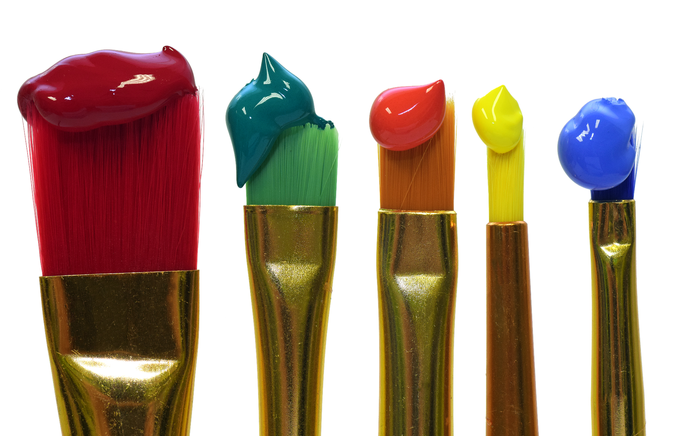
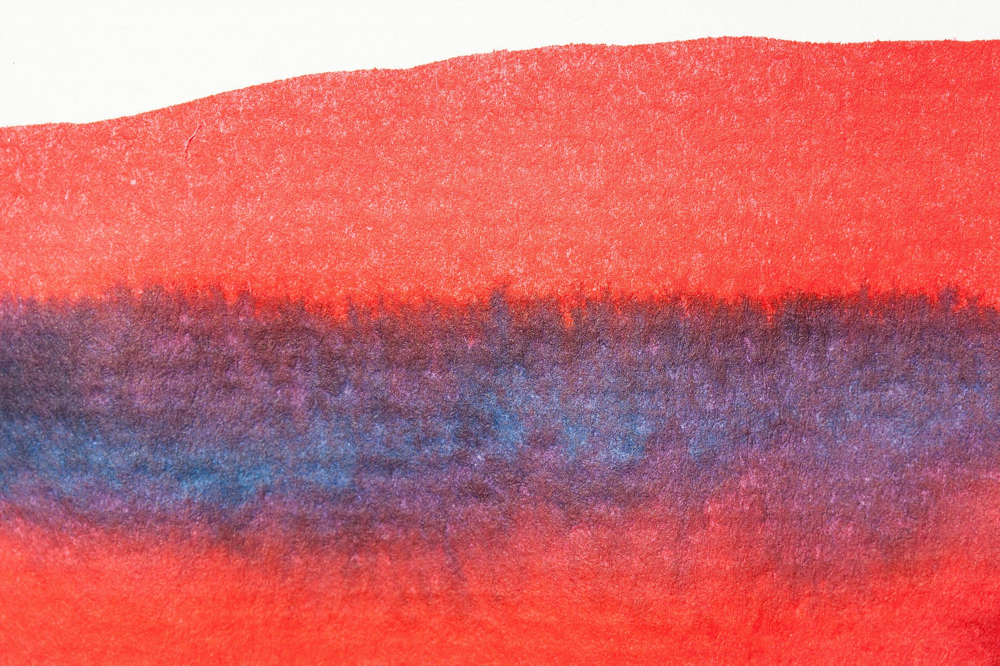

Pigments and dyes have been around for a very long time. Even since prehistoric times! Cavemen and cavewomen used materials from the earth like soil, berries and parts of flowers to make natural pigment they used to paint on cave walls.
You might be thinking: How is that possible? Well, when we see colors, we are actually seeing a frequency or frequencies of light. We perceive colors as we do in part because of the way light is absorbed or reflected by the atoms and/or molecules that make up the object or substance we are looking at. Take a look at the graphic below.
A red apple, for example, appears to be red because it is reflecting more red light than any other light. A green apple appears to be green because it is reflecting more green light than any other light. Without light, we could not see color. This is apparent in very dim light, where we cannot tell what colors objects are. (In complete darkness, we cannot see the objects at all!)
Like all objects, paint and dyes also appear to be a certain color because of the way the atoms and/or molecules that make up each substance absorb and reflect specific wavelengths of light.
What about “mixing” colors? How does that work?
Let’s take a moment and imagine that we combine red and blue paint. This is a physical process, so each paint retains is original properties, including color. When we mix these paints, we are actually combining one substance that has atoms and/or molecules that are reflecting red wavelengths of visible light with another substance that has different atoms and/or molecules that is reflecting blue wavelengths of light. When we combine the paint we see as red with the paint we see as blue, the combination reflects both red and blue light. We perceive the resulting combination of light as the color “purple."
Since color is actually light, you don’t actually "mix colors" in a tangible way like you might mix eggs and flour together. Different particles that make up each paint substance when combined together reflect specific light frequencies and when that light reaches our eyes, we perceive it as a different color. So “color mixing” actually happens in our own eyes and brains!
Now, let’s explore adding one substance, food coloring, to another substance, water. When you add food coloring to water, the particles (atoms and/or molecules) that make up the food coloring start to diffuse throughout the water. If the particles that are reflecting blue light—as illustrated in the picture above are farther apart from each other in the water, less of that light/color is reflected at one time in a certain space, which causes that part of the water to appear to be “lighter” in color. You can see above that some parts of the water where the food coloring is visible appear to be lighter and darker.
Through diffusion, the dye particles eventually become evenly distributed in the water (as shown below). At this point, they reflect a more uniform amount of light throughout the glass. In addition, less blue light will be reflected per area of water and, as a result, we perceive the water in the glass to be “light blue” (compared to the original, undiluted dye, shown above).
Let’s look at another example…
Similarly, if we combine food coloring we see as blue—which means it is reflecting blue light—with food coloring we see as yellow—which means it is reflecting yellow light—our eyes receive about equal amounts of blue light and yellow light from the resulting mixture. Our brains interpret this combination of light as green. The interesting thing is, you don’t even have to combine food coloring we see as blue, with food coloring we see as yellow to see what we call “green”! (Since the yellow and blue dyes do not come into contact, there is no way that a chemical reaction could have possibly occurred!) Take a look at the image of the jars below.
Place a bottle of water that has yellow food coloring added to it—which means it is reflecting yellow light—in front of a jar that has blue food coloring in it—which means it is reflecting blue light. If you look through the jar with the yellow food coloring in it, the part of the glass that overlapped with the jar that had blue food coloring in it appears to be green. Again, this is because we are seeing a substance that is reflecting both yellow and blue light at the same time. Our brains perceive this combination of light as green.
How do we perceive color?
Light reflected from objects in the environment enters the pupil of the eye (the black circle in the center of the colored iris). The light hits the back of the inside of the eye, called the retina. The retina contains many cells called “cones.” There are three types of cones. Each type of cone responds most strongly to a particular frequency range of light:
Red (low-frequency) light that enters the eye and hits the retina will primarily activate the “red” cones. As a result of a signal sent from the activated cone cells to the brain (via the optic nerve), we perceive the object we are looking at to be red. Similarly, blue (high-frequency) light that enters the eye and hits the retina will primarily activate the “blue” cones. When this happens, we perceive the object we’re looking at to be blue.
You probably noticed that there are colors (e.g., yellow, purple, etc.) other than the three colors cones respond most strongly to (red, green, and blue) that we are able to perceive. How are we able to “see” these other colors?
We perceive objects as yellow when both green and red cones are highly excited. Similarly, we perceive other colors when different combinations of red, green, and blue cones are activated.
Summary
In this section of the unit you learned that light is actually color and color is actually light. When we see color, we actually see the light that is being reflected off of the surface of an object or substance. When you “mix” paints you are actually mixing substances that are reflecting different wavelengths of light and appear to us to be different colors. How we perceive colors actually happens in our eyes and brains!


***Note for Teachers: You can access more information about this website and find other resources for science inquiry on the ISP Tutor website.
©2021 Klahr Lab, Carnegie Mellon University. All Rights Reserved
Carnegie Mellon University | Dept. of Psychology | 5000 Forbes Ave. | Pittsburgh, PA 15213 The TED project was funded in part by the Institute of Education Science (IES), Grant R305H060034, and in part by the National Science Foundation, Grant SBE035442. The ISP Tutor project is funded by IES, Grant R305A170176.
The research reported here was supported by the Institute of Education Sciences, U.S. Department of Education, through Grant R305A170176 to Carnegie Mellon University. The opinions expressed are those of the authors and do not represent views of the Institute or the U.S. Department of Education.